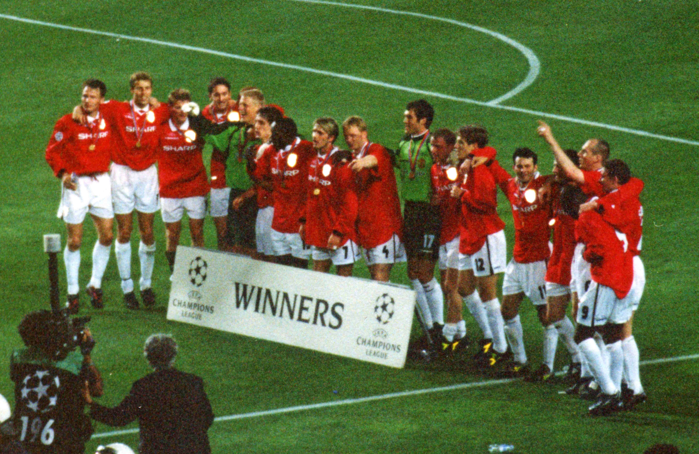

Manchester United and trophies just go hand in hand. In our history we have won the first division title 20 times, FA cup 12 times, EFL 6 times, and the Community Shield 21 times. In Europe we have also found success winning Champions league 3 times and the Europa League once. We also have a UEFA Super Cup and Club world cup in our trophy cabinet. The 90's and 2000's were incredibly successful for us under Sir Alex. I would say our shining moment came in the 1999 season. We had domestic success winning the league and FA cup to complete the double. We were facing Bayern in the Champions League for a chance to complete the treble. Manchester United were down 1-0 going into the 90th minute of the game, all hope seemed lost. We fought back and earned ourselves a corner with a chance to tie late in the game. Miraculously we scored off that corner and it seemed as if extra time was in our future, until we got another corner with only seconds left. The corner was swung in and Ole Gunnar Solskjaer completed the improbable comeback! WE WERE EUROPEAN CHAMPIONS AND COMPLETED THE TREBLE!
